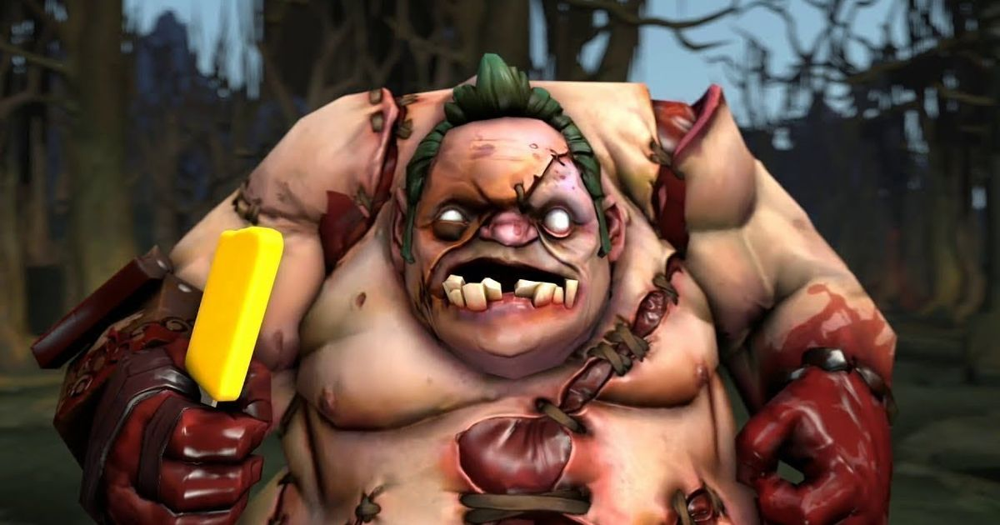
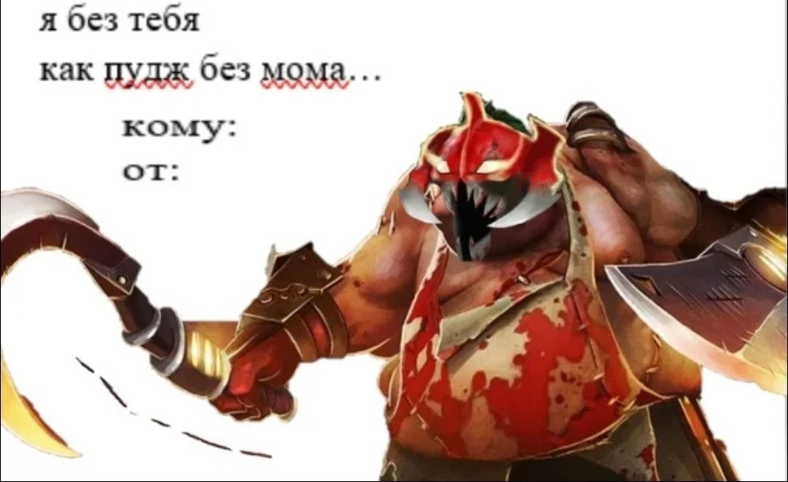
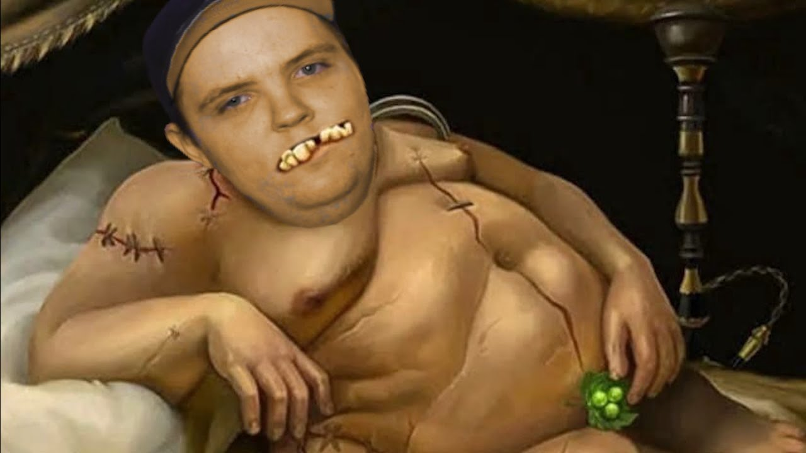
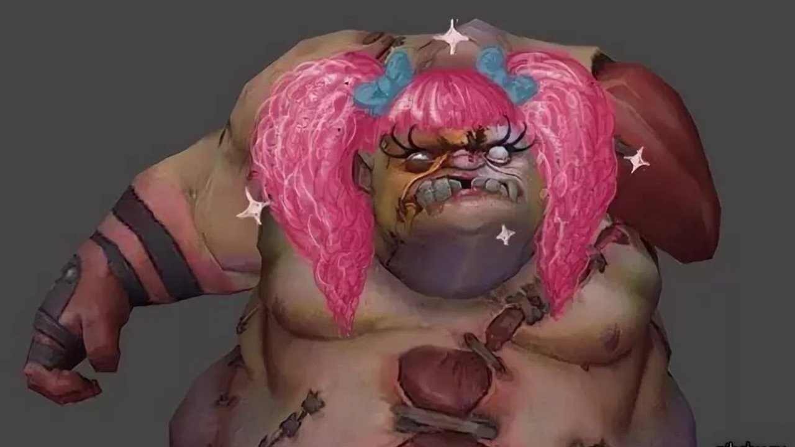
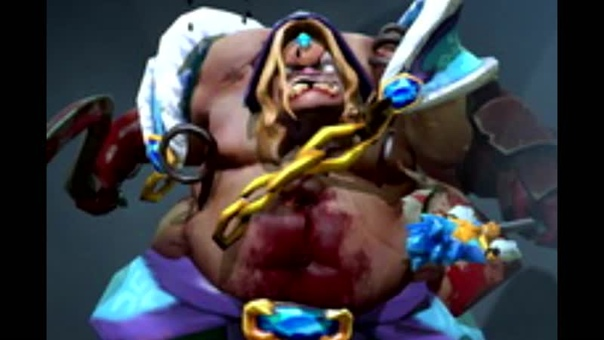

Мужчина-Миллиардер, Старый бох
На полях Вечной бойни, далеко на юге от Квойджа, тучная фигура упорно трудится под покровом ночи — убирает, а затем расчленяет, потрошит, сгружает в кучи конечности и внутренние органы павших. И все это лишь для того, чтобы на следующее утро бойня могла повториться. В том проклятом мире ничто не разлагается само по себе — мертвецам никогда не суждено вернуться обратно в землю, и не важно, насколько глубока могила. Окруженный стаями птиц-падальщиков, которым нужны порезанные кусочки трупов, мясник Pudge упражняется с лезвиями, которые затачиваются от резки трупов. Вжик-вжик-тух. Плоть отсекается от костей, связки и сухожилия отрываются как кусочки мокрой бумаги. И хоть у Pudge всегда было пристрастие к мясницкому ремеслу, со временем тучный здоровяк полюбил и то, что получается, когда он заканчивает работу над трупом. Сначала кусочек мускула там, глоточек крови... Вскоре Pudge уже вгрызался в тела самых крепких существ подобно грызущей кость собаке. Даже те, кто не питает страха перед жнецом Смерти, предпочитают не связываться с мясником
Достижения пупсика |
Попутствия на жизнь |
В молодости |
Неловкие моменты |
 |
 |  |   |